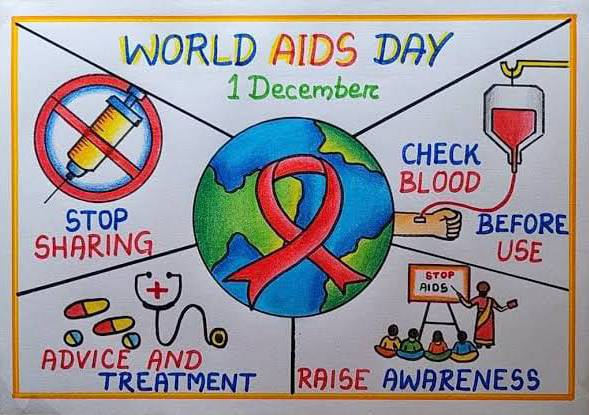

- 
Ang HIV (Human immunodeficiency virus) ay isang lentivirus na kasapi ng pamilyang retrovirus na nagsasanhi ng acquired immunodeficiency syndrome(Aids). Ang Aids ay isang kondisyon sa mga masaining tao kung saan ang pagtuloy sa ng pagkabigo o pahina ng immuno pumapayag sa mga nakapanganganib sa buhay ng pamilya.Ang HIV ay umeepekto ito sa inyung immuno system , dapat agad tayong mapatingin sa doktor kapag may sintomas ka ng naramdaman sa pag sisimula ng maaga sa medikasyon upang manatiling malakas ang inyung kalusugan.Nang dahil sa pag unlad sa medisina, maari na ngayong mamuhay ang mga positino sa HIV tulad ng mga negatibo sa sakit ito basta’t ipagpatuloy nila ang pagpapagamit. Ayon sa center for disease control and prevention and aids ay isang nakakamatay na sakit na bunga o dulot ng virus na tinatawag na hiv. Ang virus ay umaatake sa sistema na panlaban sa sakit ng tao ang lymphocytes o t-helpen celss. ito ay isang uri ng white blood cells (leukocytes) na siyang pangunahing depensa ng katawan laban sa mga sakit.Sinisira nito ang mga bacteria at virus at iba pang microorganisms na pumapasok sa katawan ng tao.Karamihan kasi ng mga nagkaroon ng HIV/AIDS ay nakakaranas ng pagtanggi sa kanilang totoong kalagayan, pagkagalit sa sarili at sa mundo at despresyon. Marami ito nakakaranas ng pagtanggi at pag iwas ng mga kaibigan at ng iba pang mga tao ,diskriminasyon sa paaralan,trabaho at iba pang social contexts, at pagbabansag na sila ay may bakla o kaya ay drug addict.